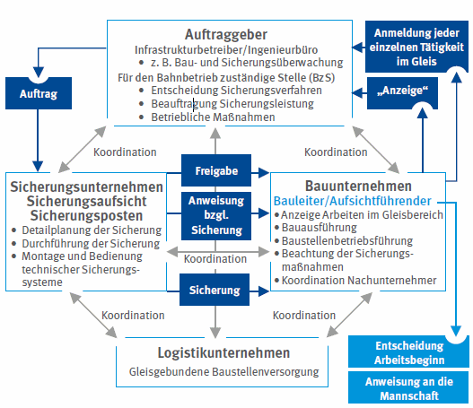
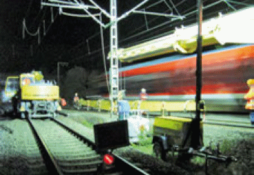
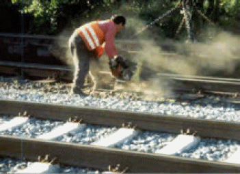
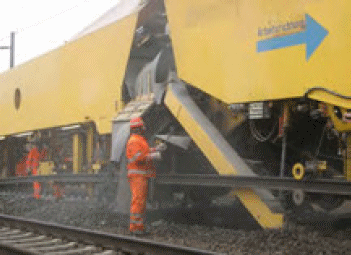
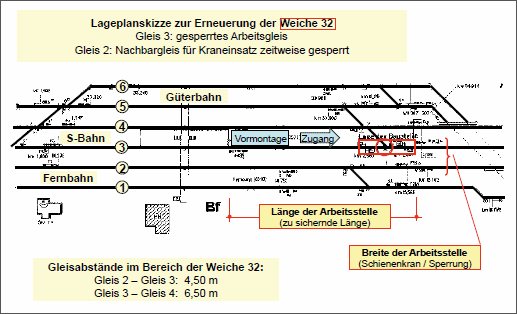
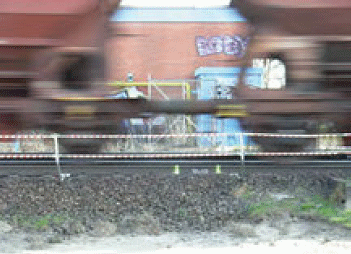
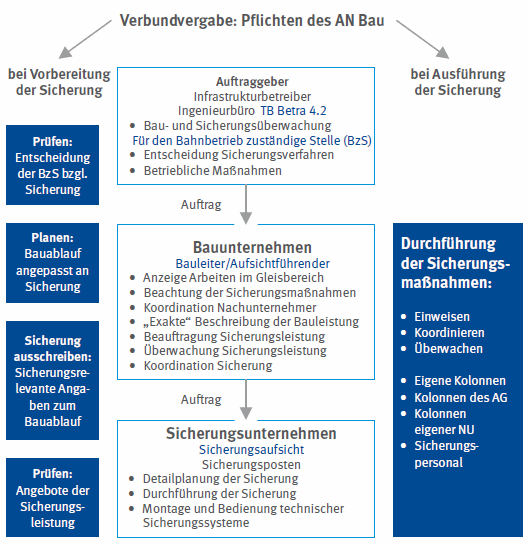
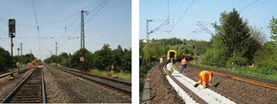
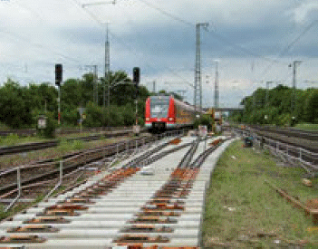

Planung und Durchführung einer Arbeitsstelle im Gleisbereich erfordern eine gute Zusammenarbeit aller Beteiligten. Der Fall getrennter Vergabe von Bau- und Sicherungsleistung ist in Abb. 3-1 dargestellt. Die für den Bahnbetrieb zuständige Stelle (BzS) ist dafür verantwortlich, dass das Sicherungsverfahren der Rangfolge gemäß Arbeitsschutzgesetz entsprechend ausgewählt wird und dass die erforderlichen betrieblichen Voraussetzungen geschaffen werden (z. B. Gleissperrung, Langsamfahrstelle, Ausschalten der Fahrleitung). Für die Umsetzung der Forderungen der Baustellenverordnung [4] (Bestellung von Koordinatoren in der Planungs- und Ausführungsphase, Erstellung des Sicherheits- und Gesundheitsschutzplanes) ist der Bauherr verantwortlich.
Eine unzureichende Weitergabe von Informationen sowie fehlende, ungenaue oder missverständliche Absprachen zwischen den Verantwortlichen vor Ort führen dazu, dass Arbeitsausführung und Sicherungsmaßnahmen nicht wie erforderlich aufeinander abgestimmt sind. Bei unvorhergesehenen zusätzlichen Arbeiten im Gleisbereich, bei Änderungen der Zeitabläufe und Arbeitsverfahren oder beim Einsatz zusätzlicher störschallintensiver Maschinen müssen die Verantwortlichen der beteiligten Unternehmen die notwendigen Informationen weitergeben, damit die Sicherungsmaßnahmen angepasst werden können. Während der Arbeiten ist die Sicherungsaufsicht des Sicherungsunternehmens der Ansprechpartner vor Ort. Das Sicherungspersonal ist gegenüber den Beschäftigten des Leistungserbringers weisungsbefugt, soweit die Maßnahmen zum Schutz vor den Gefahren des Bahnbetriebs betroffen sind. Arbeits- und Pausenzeiten von Arbeitskräften und Sicherungspersonal müssen aufeinander abgestimmt sein. Zur Abwendung von elektrischen Gefährdungen bei Arbeiten in der Nähe von Fahrleitungsanlagen und von in Fahrschienen auftretenden Rückströmen sind weitere Sicherheitsmaßnahmen nach Kap. 4 zu beachten.

| Abb. 3-1: | Beteiligte Stellen und Zusammenarbeit der Verantwortlichen an einer Arbeitsstelle im Gleisbereich bei getrennter Vergabe von Bau- und Sicherungsleistung. |
Der Unternehmer, der Arbeiten im Gleisbereich bzw. in der Nähe des Gleisbereichs ausführen möchte, muss zunächst beurteilen, ob bei diesen Arbeiten Gefährdungen durch den Bahnbetrieb (d. h. durch Schienenfahrzeuge oder Fahrleitungsanlage) entstehen können (1. Teil der Gefährdungsbeurteilung). Dazu ist die Frage zu beantworten, ob Beschäftigte, Maschinen oder Geräte durch den geplanten Arbeitsablauf, durch vorhersehbares oder unbedachtes Verhalten, durch Maßnahmen, die bei Störungen ergriffen werden müssen oder auf dem Weg zur Arbeitsstelle – auch unbeabsichtigt – in den Gleisbereich bzw. in die Nähe von unter Spannung stehenden Teilen der Fahrleitungsanlage (vgl. Kap. 4) hineingeraten können. Wird diese Frage bejaht, müssen die Arbeiten vom Unternehmer bei der für den Bahnbetrieb zuständigen Stelle rechtzeitig angezeigt werden (Bringschuld des Unternehmers). Der BzS sind auch Arbeiten anzuzeigen, die nicht im Auftrag des Bahnbetreibers ausgeführt werden sollen.
Die Anzeigepflicht gilt auch dann, wenn die wesentlichen Arbeiten außerhalb des Gleisbereichs erfolgen, jedoch mit dem Hineingeraten in den Gleisbereich gerechnet werden muss, vgl. folgende Beispiele:
Erst durch diese Anzeige kann die BzS das Sicherungsverfahren anhand einer Risikobewertung auswählen (2. Teil der Gefährdungsbeurteilung, vgl. Kap. 2.) und das Verfahren zur detaillierten Planung der Sicherungsmaßnahmen in Gang setzen (3. Teil der Gefährdungsbeurteilung) sowie die erforderlichen Sicherheitsmaßnahmen zur Abwendung von elektrischen Gefährdungen bei Arbeiten in der Nähe von Fahrleitungsanlagen und von in Fahrschienen auftretenden Rückströmen festlegen (vgl. Kap. 4).

| Abb. 3-2: | Beim Transport vorgefertigter Weichenteile mit einem Schienenkran ist die gesamte Länge zwischen Montageplatz und Einbaustelle in die Sicherung einzubeziehen. |
Der Unternehmer, der Arbeiten im Gleisbereich ausführen möchte, gibt alle wesentlichen Informationen an die BzS:
Für Arbeitsstellen in Gleisbereichen der DB sind diese Angaben auf der ersten Seite des Sicherungsplans zu machen (vgl. [25]). Sollten die dort nachgefragten Angaben für die Beurteilung der Baustellensituation nicht ausreichen, sind weitere für die Sicherung wesentliche Angaben vom Unternehmer per Beiblatt mitzuteilen.
Weiterhin sind Angaben des Unternehmers über Arbeiten in der Nähe unter Spannung stehender Teile der Fahrleitungsanlage erforderlich, auch mit Baumaschinen (Anmerkung: diese Angaben sind z. Zt. bei der DB auf der Seite 1 des Sicherungsplans nicht berücksichtigt, vgl. [25]).
Arbeiten mehrere Unternehmen zusammen, müssen die Sicherungsmaßnahmen zum Schutz vor den Gefahren des Bahnbetriebs aufeinander abgestimmt sein (BGV/ GUV-V A 1 § 6 [11]).
Bei der zu sichernden Arbeitsstellenlänge müssen auch Bewegungen innerhalb der Baustelle sowie Wege für das Personal zur Arbeitsstelle berücksichtigt werden, wenn diese im Bereich von Betriebsgleisen verlaufen.
Der Abstand zwischen Gleis und Arbeitsbereich ist wesentlich für die Entscheidung, ob zwischen Arbeitsbereich und Betriebsgleis eine Feste Absperrung (FA) angeordnet werden kann (Abb. 2-2, 2-5). Dabei müssen z. B. das Ausschwenken von Maschinenkomponenten und der Lastentransport berücksichtigt werden (z. B. Heben von Schienen, Rohren oder Bewehrungsstahl).
Der vom Unternehmer anzugebende Maschinenstörschallpegel ist die maßgebliche Eingangsgröße, um bei der Projektierung automatischer Warnsysteme den erforderlichen Signalpegel der Warnsignalgeber und deren maximal zulässigen Abstand bzw. auch zusätzliche einzelne Starktonhörner zu planen, Abb. 2-13, 3-3, 3-4. In Deutschland eingesetzte Warnsignalgeber erreichen Signalpegel zwischen 106 und 126 dB(A). Der Signalpegel nimmt akustischen Gesetzmäßigkeiten entsprechend mit dem Abstand von der Signalquelle ab (um jeweils 6 dB(A) bei Abstandsverdopplung), muss aber den Störschallpegel am Ohr des Beschäftigten um mindestens 3 dB(A) überschreiten. Eine Gleisbaumaschine mit hohem Störschallpegel verdeckt die Warnsignale, wenn das Warnsystem nicht richtig projektiert wurde. Vor Arbeitsbeginn ist in jedem Fall eine Wahrnehmbarkeitsprobe (Maschinen unter Volllast) durchzuführen.
Bei der „akustischen Planung“ können „Grundstörschallpegel“ von z. B. 90, 95 oder 97 dB(A) bei einem Abstand der Warngeber untereinander von 30 m durch die ortsfeste Warnsignalgeberkette (126 dB(A)) abgedeckt werden. Die übrigen Geräuschspitzen müssen separat berücksichtigt werden, z. B.:
Für diese Geräuschquellen können mobil aufgesetzte funkgesteuerte Signalgeber oder zusätzlich in die Warngeberkette integrierte und von Hand zu versetzende Signalgeber genutzt werden. Auch für diese Signalgebereinsätze ist eine akustische Projektierung erforderlich, damit die Signalwahrnehmbarkeit gewährleistet werden kann.
Gleisgebundene Großmaschinen, die sich kontinuierlich langsam fortbewegen (Bettungsreinigungsmaschinen, Planumsverbesserungsmaschinen, Gleisumbauzüge), haben planmäßige Arbeitsplätze außen neben der Maschine auch auf der Mittelkernseite. Verteilt über die Maschinenlänge treten mehrere Punkte mit Geräuschspitzen auf (z. B. Räumkette, Schotterauswurf, Schwellenaufnahme). Die Maschinen können mit maschineneigenen fest installierten Warnanlagen ausgestattet werden. Im Netz der DB ist dies verbindlich vorgeschrieben [33]. Bei der Arbeitsbreite ist der Arbeitsraum für den seitlich mitgehenden Maschinenbediener (Seitenläufer) zu berücksichtigen.
Bei handgeführten Maschinen muss für die Festlegung der Arbeitsbreite auch der seitlich erforderliche Bewegungsraum berücksichtigt werden, der vom Unternehmer festzulegen ist, Abb. 2-2.
Für Gleisbauarbeiten nachts und im Tunnel muss eine ausreichende Beleuchtung vorgesehen werden: gemäß Technischer Regel für Arbeitsstätten ASR 3.4 (4/2011) [9] beträgt der Mindestwert der Beleuchtungsstärke für die Gleisbauarbeiten 50 lx.

| Abb. 3-3: | Bei Schienentrennungen wurden Störschallpegel bis zu 114 dB(A) gemessen. Die erforderliche persönliche Schutzausrüstung muss getragen werden (für das Signalhören geeigneter Gehörschutz, Schutzbrille, Kopfschutz, die Warnweste ist geschlossen zu tragen). Für die hier gezeigte Arbeitsposition ist das Nachbargleis zu sperren. |

| Abb. 3-4: | Bei gleisgebundenen Großmaschinen wurden Störschallpegel bis zu 110 dB(A) gemessen. Die Arbeitsbreite setzt sich zusammen aus der Maschinenbreite und der Breite des Arbeitsraums für den Seitenläufer. Bei Gefahr durch von der Maschine herabfallende oder umherfliegende Gegenstände wie z. B. Schottersteine ist Kopfschutz zu tragen. |
Nach der Festlegung des Sicherungsverfahrens durch die BzS führt i. d. R. das Sicherungsunternehmen die detaillierte Planung der Sicherungsmaßnahmen durch (Festlegung der erforderlichen Sicherheitsmaßnahmen zur Abwendung von elektrischen Gefährdungen bei Arbeiten in der Nähe von Fahrleitungsanlagen und von in Fahrschienen auftretenden Rückströmen, siehe Kap. 4). Bei der DB wird diese Planung im Sicherungsplan festgeschrieben, der von den Verantwortlichen der drei Beteiligten – BzS, Sicherungsunternehmen sowie ausführendes Unternehmen – unterschrieben wird. Der Verantwortliche des ausführenden Unternehmens dokumentiert mit seiner Unterschrift, dass er die Sicherungsmaßnahmen akzeptiert und dass er seine Beschäftigten unter diesen Bedingungen im Gleisbereich arbeiten lässt. Der Sicherungsplan ist Grundlage der Einweisung in die Sicherungsmaßnahmen, die vom Verantwortlichen des Sicherungsunternehmens für die Arbeitsaufsicht und von dieser für die Beschäftigten durchzuführen ist. Dies gilt auch für neu hinzukommende Beschäftigte und für Beschäftigte von Nachunternehmern.
Um die Sicherungsmaßnahmen eindeutig zu dokumentieren ist die Anfertigung einer Skizze sinnvoll, in der genaue Ortsangaben (Kilometrierung), Gleis- und Weichenbezeichnungen, Signale, Lf-Signale, Schutzhalt-Signale und der Zugang zur Arbeitsstelle eingetragen sind, vgl. Abb. 3-5. Damit lässt sich leicht ermitteln, ob alle erforderlichen Arbeitsbereiche, z. B. auch für Erdungsmaßnahmen, Schweißarbeiten, Vor- und Nachlauflängen sowie Transportwege für Schienenkrane oder Zweiwegebagger, in die Sicherung einbezogen sind.
Die im Sicherungsplan festgelegten Sicherungsmaßnahmen sind verbindlich. Die Arbeitsaufsicht entscheidet, ob bei den eingerichteten Sicherungsmaßnahmen mit der Arbeit im Gleisbereich begonnen wird und teilt der Sicherungsaufsicht Änderungen im Bauablauf mit, die auf die Sicherungsmaßnahme Einfluss haben können. Falls erforderlich, passt die Sicherungsaufsicht die Sicherungsmaßnahme an die Änderungen im Bauablauf an (z. B. Einsatz zusätzlicher schallintensiver Warnsignalgeber). Eine Änderung des Sicherungsverfahrens (z. B. Einsatz einer Postenkette anstelle der FA) darf nur in Abstimmung mit der für den Bahnbetrieb zuständigen Stelle erfolgen, da nur diese die Entscheidung treffen darf, welches Sicherungsverfahren durchzuführen ist.
Der Sicherungsplan dokumentiert z. B.:
Die Sicherheitsmaßnahmen zur Abwendung von elektrischen Gefährdungen bei Arbeiten in der Nähe von Fahrleitungsanlagen und von in Fahrschienen auftretenden Rückströmen (vgl. Kap. 4) sind bei der DB in den Ril 132.0123A01 bzw. 132.0123A04 [26] festgelegt.
Die spezifischen Angaben zum Einsatz von automatischen Warnsystemen sollten aus der Projektplanung des jeweiligen Warnsystems in den Sicherungsplan übernommen werden (Signalpegel, Abstand der Signalgeber, zusätzliche Starktonhörner für Störschallspitzen, maschineneigene Warnsysteme, Anordnung der Schienenkontakte).
Im Sicherungsplan müssen auch Kombinationen von Sicherungsmaßnahmen berücksichtigt werden, wenn dies zur Durchführung der Arbeiten erforderlich ist. Abb. 3-6 zeigt als Beispiel Markierungen am Betriebsgleis hinter der festen Absperrung. Wenn das Betriebsgleis für Messarbeiten kurzzeitig betreten werden muss, ist dies der BzS vom Bauunternehmen mitzuteilen (DB: Seite 1 des Sicherungsplans [25]), damit diese die erforderlichen Sicherungsmaßnahmen anordnen kann (z. B. kurzzeitige Sperrung oder Einsatz eines automatischen Warnsystems oder, falls dies im sicherheitstechnischen Sinn nicht angemessen ist, Einsatz von Sicherungsposten).

| Abb. 3-5: | Skizze zur Lage der Arbeitsstelle mit Verfahrweg des Schienenkrans und Zugang für das Baustellenpersonal. |

| Abb. 3-6: | Wenn das Gleis hinter der Festen Absperrung für Messarbeiten kurzzeitig betreten werden soll, muss dafür eine Sicherungsmaßnahme eingerichtet werden, z. B. Gleissperrung oder Warnung. |
Bei der Verbundvergabe wird die Sicherungsleistung bei der DB Netz AG gemeinsam mit der Bauleistung ausgeschrieben und beauftragt. Das Sicherungsunternehmen kalkuliert die erforderlichen Mengen der Sicherungsleistungen. Dabei ist die Planung des Bauunternehmens zur Arbeitsausführung (Vorarbeiten, Hauptarbeiten, Nacharbeiten, Belastungsstopfgang) mit Angabe aller Arbeitsschritte mit Orten, Zeiten, Maschinenart sowie Arbeitsgeschwindigkeiten die wesentliche Grundlage (Bauablaufplan). Das Angebot der Sicherungsleistung hat für das Bauunternehmen Einfluss auf die Chancen für den Gewinn der Ausschreibung. Im Zuge der Planung ist eine sehr enge Zusammenarbeit zwischen Bauunternehmen und Sicherungsunternehmen erforderlich. Bei der Verbundvergabe gewinnt die Verantwortung des Bauunternehmens für die Baustellensicherung erheblich an Bedeutung und wird durch die Ausschreibungsunterlagen zur Sicherungsleistung klar dokumentiert.
Die Verantwortung der BzS für die Festlegung des Sicherungsverfahrens, für die Durchführung der erforderlichen betrieblichen Maßnahmen (Gleissperrung, Einrichtung von Langsamfahrstellen, Ausschluss von Lademaßüberschreitungen, um z. B. eine FA zu ermöglichen), für die Sicherungsüberwachung und für die Sicherungskoordination gemäß [25] besteht auch bei gemeinsamer Vergabe von Bau- und Sicherungsleistung aufgrund der Verkehrssicherungspflicht des Infrastrukturbetreibers.
Das Bauunternehmen steht bei Verbundvergabe bzgl. der Verantwortung für die Sicherungsleistung in einer Linie zwischen der BzS und dem vom Bauunternehmen beauftragten Sicherungsunternehmen, Abb. 3-7. Eine direkte vertragliche Beziehung zwischen BzS und Sicherungsunternehmen wie bei der getrennten Vergabe von Bau- und Sicherungsleistung (vgl. Abb. 3-1) besteht bei Verbundvergabe nicht.
Die Funktionsträger des Bauunternehmens für Arbeitsvorbereitung, Ausschreibung, Beauftragung, Prüfung und Koordination der Sicherungsmaßnahmen müssen bei der Verbundvergabe einer erheblich gewachsenen Verantwortung für die Sicherungsleistung gerecht werden:

| Abb. 3-7: | Verantwortung des Bauunternehmers bei Verbundvergabe (AG = Auftraggeber, NU = Nachunternehmer). |

| Abb. 3-8: | Offensichtliche Fehler in der Ausführung der Sicherungsleistung – links: der Arbeitsbereich ist vom Warnsystem nicht vollständig abgedeckt, rechts: die Warnsignale sind für die Schraubmaschinenbediener nicht hörbar – muss der Verantwortliche des Bauunternehmens erkennen und abstellen lassen. |

| Abb. 3-9: | Feste Absperrung als Sicherung für den Vormontageplatz einer Weiche. |